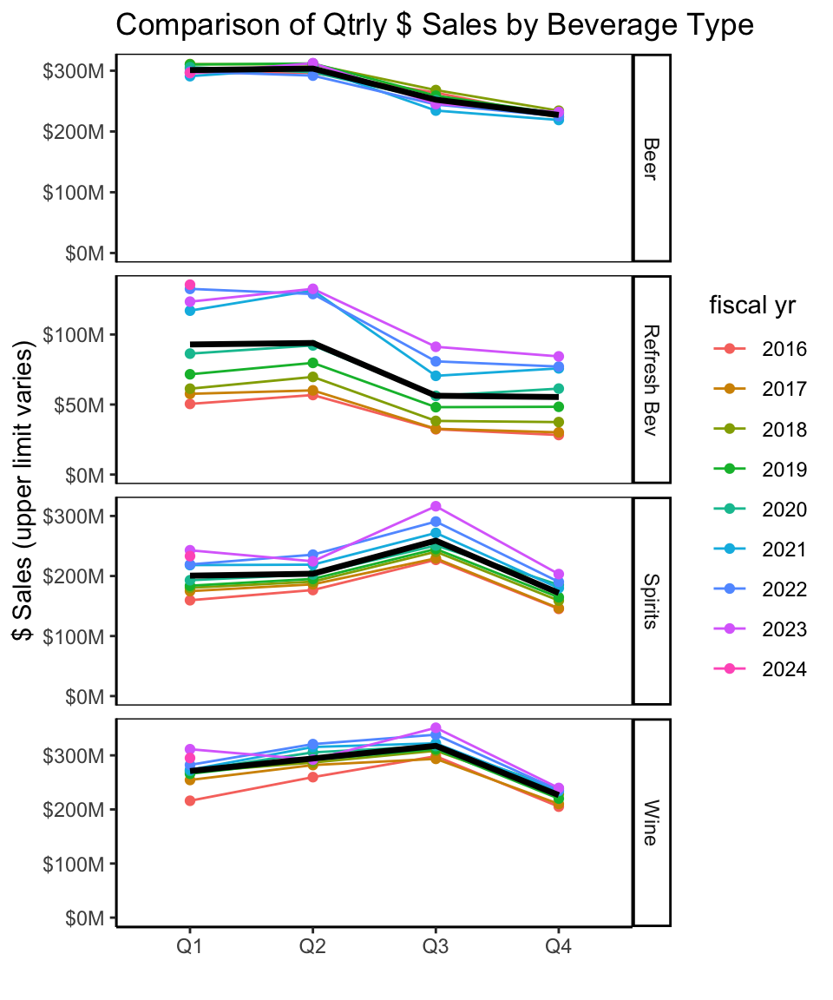
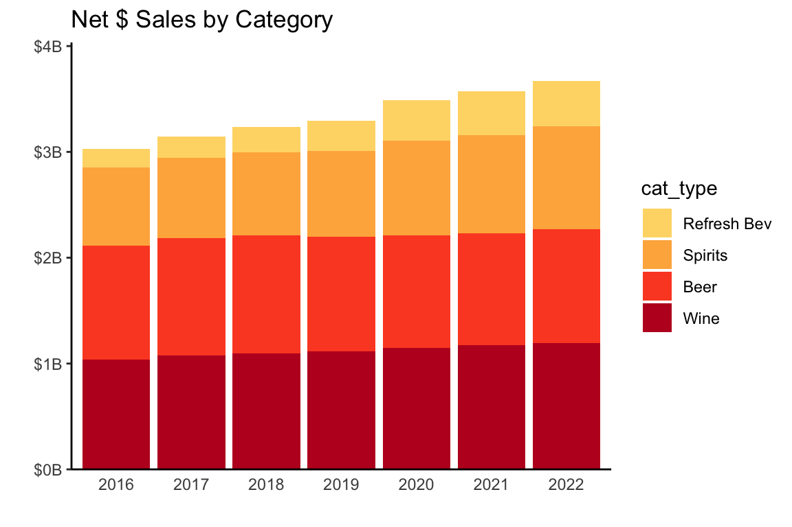
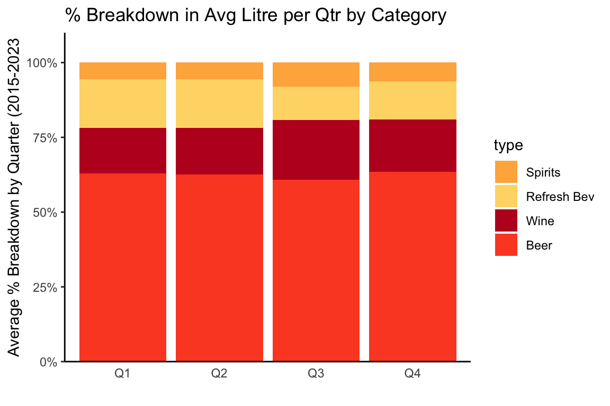

BC Liquor Sales Analysis - Jun 2023 edition
British Columbia Liquor Distribution Board releases its ‘Liquor Market Review’ on a quarterly basis, covering dollar and litre sales across major categories of beer, wine, spirits, and ‘refreshment beverages’ (ciders, coolers).
This is a combined look at quarterly data going back as long as the current format has been published - back to 2015.
ANNUAL TREND OVERVIEW
Annual: All Categories
$ Sales
There has been general upward drift in net sales dollars in recent years: (Based on most recent full yr avail.)
Code
# get full years for comparison
drop_yr <- c(2015,2023) ## drop partial yrs for simplicity
trend_yr <- lmr_data %>% filter(cyr>drop_yr[1] & cyr<drop_yr[2]) %>%
group_by(cyr) %>% summarize(netsales=sum(netsales),
litres=sum(litres))
# add % chg YoY, $/l
trend_yr <- trend_yr %>% mutate(
pc_chg_sales=netsales/lag(netsales)-1,
pc_chg_litres=litres/lag(litres)-1,
dollar_per_litre=netsales/litres,
pc_chg_d_per_l=dollar_per_litre/lag(dollar_per_litre)-1
)Code
ch_title <- "Net Sales $ Trends - All Categories"
trend_yr %>% ggplot(aes(x=as.factor(cyr), y=netsales, group=1))+
geom_line(color=bar_col, linewidth=2)+
geom_point(aes(y=netsales), color=bar_col, size=3)+
scale_y_continuous(labels=comma_format(prefix="$", scale=1e-9,suffix="B"), expand=expansion(mult=c(0,0.1)), limits=c(0,max(trend_yr$netsales)))+
labs(title=ch_title,y="",x="")+
theme_classic()+
theme(axis.ticks.x = element_blank()) Year-over-Year % Change: ($ Sales)
Out-sized year-over-year % increase in first year of the covid-19 pandemic:
Code
# chart % chg sales YoY
ch_title <- "Net Sales: Year-over-Year % change"
trend_yr %>% filter(cyr!=min(cyr)) %>%
ggplot(aes(x=as.factor(cyr), y=pc_chg_sales))+
geom_col(fill=bar_col)+
geom_hline(yintercept=mean(trend_yr$pc_chg_sales, na.rm=TRUE), linetype='dotted')+
scale_y_continuous(labels=percent_format(), expand=expansion(mult=c(0,0.1)))+
labs(title=ch_title,y="",x="")+
theme(axis.ticks.x = element_blank()) The biggest YoY change was 2020: pandemic time! Prior to 2020, annual increases were slowing down (while total still increasing).
Volume (Litres)
Sales in litres have been essentially flat in recent years:
Code
ch_title <- "Litre Volume Trends - All Categories"
trend_yr %>%
ggplot(aes(x=as.factor(cyr), y=litres, group=1))+
#geom_col(fill=bar_col)+
geom_line(color=bar_col, size=2)+
geom_point(aes(y=litres), color=bar_col, size=3)+
geom_hline(yintercept=mean(trend_yr$litres), linetype='dotted')+
scale_y_continuous(labels=comma_format(scale=1e-6,suffix="M"), expand=expansion(mult=c(0,0.1)), limits=c(0,max(trend_yr$litres)))+
labs(title=ch_title,y="",x="")+
theme_classic()+
theme(axis.ticks.x = element_blank()) 
Litre volume has remained relatively steady, with a peak during the 2020 pandemic. Volumes are slowing down, although 2022 still above 2019.
Year-over-Year % Change: Volume (Litres)
Biggest year-over-year jump of ~4% in 2020, with declines accelerating from 2021 to 2022.
Code
# chart % chg liters YoY
ch_title <- "Litre Vol.: Year-over-Year % change"
trend_yr %>% filter(cyr!=min(cyr)) %>%
ggplot(aes(x=as.factor(cyr), y=pc_chg_litres))+
geom_col(fill=bar_col)+
geom_hline(yintercept=mean(trend_yr$pc_chg_litres, na.rm=TRUE), linetype='dotted')+
scale_y_continuous(labels=percent_format(), expand=expansion(mult=c(0.1,0.1)))+
geom_hline(yintercept=0)+
labs(title=ch_title,y="",x="")+
theme(axis.ticks.x = element_blank()) $/Litre
Looking at trends in $/litre gives us a sense of how overall prices have changed over time. Not surprisingly, steadily upward, increasing with inflation:
Code
# chart $/ltr
ch_title <- "$/Litre Trends - All Categories"
trend_yr %>%
ggplot(aes(x=as.factor(cyr), y=dollar_per_litre, group=1))+
#geom_col(fill=bar_col)+
geom_line(color=bar_col, size=2)+
geom_point(aes(y=dollar_per_litre), color=bar_col, size=3)+
scale_y_continuous(labels=label_comma(prefix="$", accuracy=0.01), expand=expansion(mult=c(0,0.1)), limits=c(0, max(trend_yr$dollar_per_litre)))+
labs(title=ch_title,y="",x="")+
theme_classic()+
theme(axis.ticks.x = element_blank()) Year-over-Year % Change: $/Litre
With relatively flat litre volume sales, the increase in dollar volume is driven by increase in $ of revenue per litre. Dollar per litre increases have been fairly steady, around 2%, until 2021. This corresponds with overall increase in inflation, accelerating through 2021 and 2022:
Code
# chart % chg $/liters YoY
ch_title <- "$/Litre: Year-over-Year % change"
trend_yr %>% filter(cyr!=min(cyr)) %>%
ggplot(aes(x=as.factor(cyr), y=pc_chg_d_per_l))+
geom_col(fill=bar_col)+
geom_hline(yintercept = mean(trend_yr$pc_chg_d_per_l, na.rm=TRUE), linetype='dotted')+
scale_y_continuous(labels=percent_format(), expand=expansion(mult=c(0,0.1)))+
labs(title=ch_title,y="",x="")+
theme(axis.ticks.x = element_blank()) 
Annual: By Major Category
As noted, the BC LMR provides a breakdown of sales by four major categories.
Category $ Sales
Code
# annual data by category
drop_yr <- c(2015,2023) ## drop partial yrs for simplicity
trend_yr_cat <- lmr_data %>% filter(cyr>drop_yr[1] & cyr<drop_yr[2]) %>% group_by(cyr, cat_type) %>% summarize(
netsales=sum(as.numeric(netsales)),
litres=sum(as.numeric(litres))
)
trend_yr_cat <- trend_yr_cat %>% ungroup() %>% mutate(
dollar_per_litre=netsales/litres,
pc_chg_sales=netsales/lag(netsales, n=4)-1, # yoy change by category
pc_chg_litre=litres/lag(litres, n=4)-1,
pc_chg_dollar_per_l=dollar_per_litre/lag(dollar_per_litre, n=4)-1
)For $ sales, wine and beer are the largest categories, followed by spirits, with refreshment beverages as distant fourth:
Code
# annual sales by category (stack)
ch_title <- "Net $ Sales by Category"
# order cat_type by netsales for chart
trend_yr_cat$cat_type <- fct_reorder(trend_yr_cat$cat_type, trend_yr_cat$netsales)
trend_yr_cat %>% ggplot(aes(x=as.factor(cyr), y=netsales, fill=cat_type))+
geom_col()+
scale_y_continuous(labels=label_comma(prefix="$", scale=1e-9,suffix="B"), expand=expansion(mult = c(0,0.1)))+
scale_fill_manual(values=cat_type_color)+
labs(title=ch_title, x="",y="")+
theme(axis.ticks.x = element_blank())
Category % Breakdown: $ Sales
Looking at the overall % breakdown, we can more easily spot changes in composition over time:
Code
ch_title <- "Net $ Sales by Category, % of Total"
trend_yr_cat %>% ggplot(aes(x=as.factor(cyr), y=netsales, fill=cat_type))+
geom_col(position='fill')+
scale_y_continuous(labels=percent_format(), expand=expansion(mult = c(0,0.1)))+
scale_fill_manual(values=cat_type_color)+
labs(title=ch_title, x="",y="")+
theme(axis.ticks.x = element_blank())
Percentage breakdown shows wine and beer with bulk of market share, BUT…beer particularly fading in favour of spirits and refreshment beverages, with the latter showing strongest relative growth.
Category Year-over-Year % Change: $ Sales
Refreshment Beverages had dolllar sales growth of over 20% for 3 years in a row:
Code
ch_title <- "% Chg in Net $ Sales, Year-over-Year by Category"
trend_yr_cat %>% filter(cyr!=min(cyr)) %>%
ggplot(aes(x=as.factor(cyr), y=pc_chg_sales))+
geom_col(fill=bar_col)+
geom_hline(yintercept = 0)+
facet_grid(.~cat_type)+
scale_y_continuous(labels=percent_format())+
theme(strip.background = element_rect(fill = bar_col)) +
theme(strip.text=element_text(color='white'))+
labs(title=ch_title, x="",y="")+
theme(axis.text.x=element_text(hjust=0, vjust=0.5, angle=90),
axis.ticks.x = element_blank()
,panel.border = element_rect(fill=NA)
) 
During the pandemic in 2020, Refreshment Beverages had a surge in growth, on top of already strong trend in previous years. Spirits also had a significant increase - around 10% year-over-year growth.
Beer is the only category with negative growth during the period, through 2019-2021, although recovered in 2022.
Category Volume (Litres)
Looking at litre sales confirms growth of Refreshment Beverages:
Code
# annual litres by category (stack)
ch_title <- "Volume (Litres) by Category"
# order cat_type by netsales for chart
trend_yr_cat$cat_type <- fct_reorder(trend_yr_cat$cat_type, trend_yr_cat$litres)
trend_yr_cat %>% ggplot(aes(x=as.factor(cyr), y=litres, fill=cat_type))+
geom_col()+
scale_y_continuous(labels=label_comma(scale=1e-6,suffix="M"), expand=expansion(mult = c(0,0.1)))+
scale_fill_manual(values=cat_type_color)+
labs(title=ch_title, x="",y="")+
theme(axis.ticks.x = element_blank())
Beer constitutes the largest volume by far (no surprise), although has been shrinking, with growth in Refreshment Beverage volume.
Percentage breakdown highlights even further the decline in beer share of volume (still well over 50%), mostly due to increase in Refreshment Beverages sales.
Code
# annual litres by category (stack)
ch_title <- "Volume (Litres) by Category"
# order cat_type by netsales for chart
trend_yr_cat$cat_type <- fct_reorder(trend_yr_cat$cat_type, trend_yr_cat$litres)
trend_yr_cat %>% ggplot(aes(x=as.factor(cyr), y=litres, fill=cat_type))+
geom_col(position='fill')+
scale_y_continuous(labels=percent_format(), expand=expansion(mult = c(0,0.1)))+
scale_fill_manual(values=cat_type_color)+
labs(title=ch_title, x="",y="")+
theme(axis.ticks.x = element_blank())
Category Year-over-Year % Change: $ Sales
Refreshment Beverage growth in litres is lower than growth in dollar sales, but still impressive, peaking at over 30% year-over-year.
Code
ch_title <- "% Chg in Volume (Litres), Year-over-Year by Category"
trend_yr_cat %>% filter(cyr!=min(cyr)) %>%
ggplot(aes(x=as.factor(cyr), y=pc_chg_litre))+
geom_col(fill=bar_col)+
geom_hline(yintercept = 0)+
facet_grid(.~cat_type)+
scale_y_continuous(labels=percent_format())+
theme(strip.background = element_rect(fill = bar_col)) +
theme(strip.text=element_text(color='white'))+
labs(title=ch_title, x="",y="")+
theme(axis.text.x=element_text(hjust=0, vjust=0.5, angle=90),
axis.ticks.x = element_blank()
,panel.border = element_rect(fill=NA)
) Beer had declining volume in the most recent 5 years, although may be stabilizing. Other categories all had strongest volume growth in 2020 during the pandemic. Refreshment beverages saw decline in growth rate in 2022 after 5 years of strong growth.
Interestingly, Beer was the only category that did not experience growth during the first year of covid-19 pandemic - maybe due to relatively high consumption of beer consumed in bars and restaurants? That could explain why declining growth decreased as pandemic restrictions faded.
Category $/Litre
Code
ch_title <- "$/Litre by Category"
trend_yr_cat %>% ggplot(aes(x=cyr, y=dollar_per_litre, color=cat_type, group=cat_type))+
geom_line(size=1)+
geom_point(aes(y=dollar_per_litre), size=2)+
scale_y_continuous(labels=label_comma(prefix="$"))+
scale_color_manual(values=cat_type_color)+
labs(title=ch_title, x="", y="")Code
ch_title <- "% Chg in $/Litres, Year-over-Year by Category"
trend_yr_cat %>% filter(cyr!=min(cyr)) %>%
ggplot(aes(x=as.factor(cyr), y=pc_chg_dollar_per_l))+
geom_col(fill=bar_col)+
geom_hline(yintercept = 0)+
facet_grid(.~cat_type)+
scale_y_continuous(labels=percent_format())+
theme(strip.background = element_rect(fill = bar_col)) +
theme(strip.text=element_text(color='white'))+
labs(title=ch_title, x="",y="")+
theme(axis.text.x=element_text(hjust=0, vjust=0.5, angle=90),
axis.ticks.x = element_blank()
,panel.border = element_rect(fill=NA)
) Category $/Litre vs Volume and $ Sales
Code
ch_title <- "Relationship Between Changes in $/litre and volume"
trend_yr_cat %>% ggplot(aes(x=pc_chg_dollar_per_l, y=pc_chg_litre, color=cyr, label=cyr))+
geom_point()+
## options for labelling - too cluttered
#geom_text(vjust=0.2, hjust=-0.2, size=3)+
#geom_text_repel(size=3)+
scale_color_gradient(low = "lightblue", high = "darkblue") +
facet_grid(cat_type~., scales='free_y')+
scale_x_continuous(labels=percent_format())+
scale_y_continuous(labels=percent_format())+
labs(title=ch_title, x="% Chg in $/litre", y="% Chg in Litres - scale varies")+
theme(panel.border = element_rect(fill=NA))Different categories have different relationships between revenue per litre (a proxy for price*) and volume sales:
- Beer looks like a counter-intuitive relationship where the biggest price increases are actually associated with increases, or at least smallest decreases, in volume. Price changes have been modest, so there are probably other factors involved.
- Refreshment beverages don’t appear to have a strong relationship between price increase and changes in volume during this period of growth, although most recently a ~6% increase in price is associated with a reversal in the growth trend and a small decrease in volume.
- Wine is the clearest case, in terms of different scenarios, where an average price decrease in wine of around 2.5% was associated with ~6% volume growth (top left of Wine panel) and price increases of 6+% werre associated with ~3% decline in sales volume.
Clearly, though, there are a variety of factors at work here and not enough data to make any solid conclusions with regard to effect of changes in net sales per litre and litre volumes sold.
[pt II] Quarterly
Overview
Code
# roll-up categories by qtr
trend_ttl_qtr <- lmr_data %>% group_by(cyr, fyr, fy_qtr, qtr) %>% summarize(
netsales=sum(netsales),
litres=sum(litres)
)
# calculate quarterly info
trend_qtr <- lmr_data %>% group_by(fy_qtr, start_qtr_dt, qtr) %>%
summarize(netsales=sum(netsales),
litres=sum(litres)
)
trend_qtr <- trend_qtr %>% ungroup() %>% mutate(
pc_chg_sales=netsales/lag(netsales)-1,
pc_chg_litres=litres/lag(litres)-1,
pc_chg_sales_qtr=netsales/lag(netsales, n=4),
pc_chg_litres_qtr=litres/lag(litres, n=4)
)
# averages
trend_qtrs <- trend_qtr %>% group_by(qtr) %>% summarize(
avglitres=mean(litres),
avg_sales_pc_chg=mean(pc_chg_sales, na.rm=TRUE),
avg_litres_pc_chg=mean(pc_chg_litres, na.rm=TRUE)
)Code
ch_title <- "Litres Comparison by Quarter (fiscal yr*)"
trend_ttl_qtr %>% ggplot(aes(x=qtr, y=litres, color=factor(fyr), group=fyr))+
geom_line()+
geom_point()+
scale_y_continuous(labels=label_comma(scale=1e-6, suffix="M"), expand=expansion(add=c(0,0.1)), limits=c(0,max(trend_ttl_qtr$litres)))+
labs(title=ch_title, x="", y="litres", color='fiscal yr')\\* BC LDB fiscal yr runs Apr - Mar, so Q1=Apr-May-Jun, and so on.
- Q2 (Jul-Aug-Sep) has highest sales, edging out Q1 (Apr-May-Jun)
- Q3 (Oct-Nov-Dec) sees drop, even with holidays, and then lower again for Q4 (Jan-Feb-Mar)
Code
ch_title <- "Distribution of % Change Between Quarters"
trend_qtr %>% ggplot(aes(y=pc_chg_sales, x=qtr))+
geom_boxplot(fill=bar_col)+
scale_y_continuous(labels=percent_format())+
geom_hline(yintercept = 0, linetype='dotted')+
labs(title=ch_title, x="",y="% chg from prev quarter")- Q1 (Apr-May-Jun) typically has well over 20% increase over previous Q4
- Q2 (Jul-Aug-Sep) tends to be ~5% higher that Q1.
- Q3 -> doesn’t look right - expect larger drop from Q2, based on other charts
- Q4 (Jan-Feb-Mar) is usually more that 20% drop from Q3
Could be interesting to see how the overall pattern matches categories.
By Major Category
What are the quarterly trends by major category in recent years?
which categories peak in which quarters?
Volume (Litres)
Code
# quarters at cat_type level
trend_qtr_cat <- lmr_data %>% group_by(cyr, fyr, fy_qtr, start_qtr_dt, qtr, cat_type) %>%
summarize(netsales=sum(netsales),
litres=sum(litres)
)
trend_qtr_cat$cat_type <- as.factor(trend_qtr_cat$cat_type)
trend_qtrs_cat <- trend_qtr_cat %>% group_by(qtr, cat_type) %>%
summarize(
avg_netsales=mean(netsales),
avg_litres=mean(litres),
max_litres=max(litres)
)
trend_qtrs_cat$cat_type <- as.factor(trend_qtrs_cat$cat_type)Code
ch_title <- "Comparison of Qtrly volume by Category"
trend_qtr_cat %>% ggplot(aes(x=qtr, y=litres, color=factor(fyr), group=fyr))+
geom_line()+
geom_point()+
facet_grid(cat_type~., scales='free_y')+
scale_y_continuous(labels=label_comma(scale=1e-6, suffix="M"),
limits=c(0,NA))+
labs(title=ch_title, x="", color="fiscal yr", y="litres (upper limit varies)")+theme(panel.border = element_rect(fill=NA))
Code
#+ theme(panel.border = element_line())- Beer and - even more-so - refreshment beverages drop from Q1-Q2 (Apr-Sep) to Q3-Q4 (Oct-Mar).
- Wine, Spirits have small peak in Q3 (Oct-Dec) - holiday season.
Code
trend_qtrs_cat$cat_type <- fct_reorder(trend_qtrs_cat$cat_type, trend_qtrs_cat$avg_litres)
ch_title <- "Breakdown in Avg Litre per Qtr by Category"
trend_qtrs_cat %>% ggplot(aes(x=qtr, y=avg_litres, fill=cat_type))+
geom_col(position='fill')+
scale_y_continuous(labels=percent_format(), expand=expansion(mult = c(0,0.1)))+
scale_fill_manual(values=cat_type_color)+
labs(title=ch_title, x="",y="")+
theme(axis.ticks.x = element_blank())Reinforcing the shifts in category by quarters - showing the bulge in % share for wine and spirits in Q3-Q4 (Sep-Mar).
Footnotes
Notes on ‘net $ sales’:
- the report says “Net dollar value is based on the price paid by the customer and excludes any applicable taxes.”
- calculating average net dollar value per litre for beverage categories gives unrealistically low numbers compared to retail prices in BC liquor stores. (Beer at average $4/litre? Not even the cheapest beer on the BC Liquor Stores website.)
- there is likely additional factors related to BC LDB pricing structure, wholesaling, etc.
- best to consider average net dollar value per litre referred to below as relative indicator.